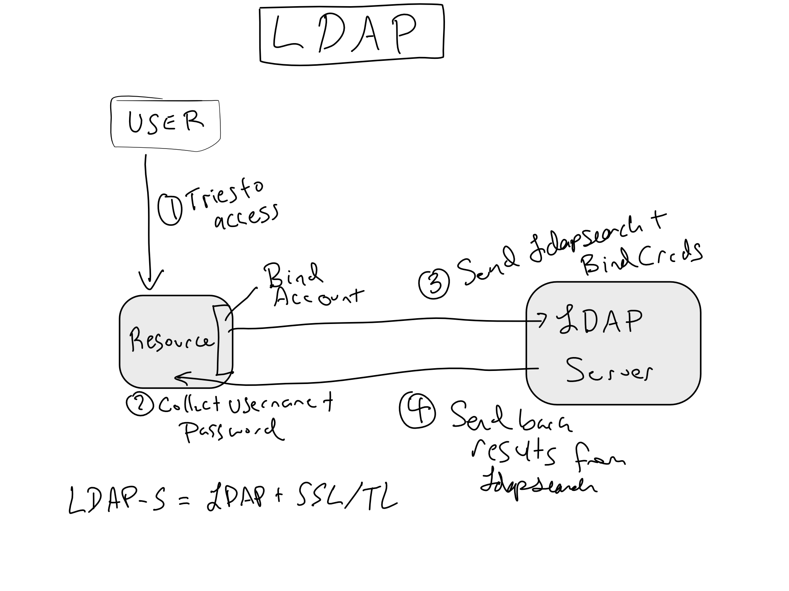
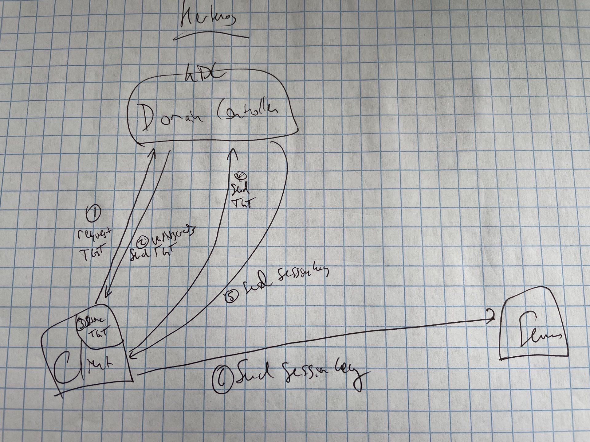
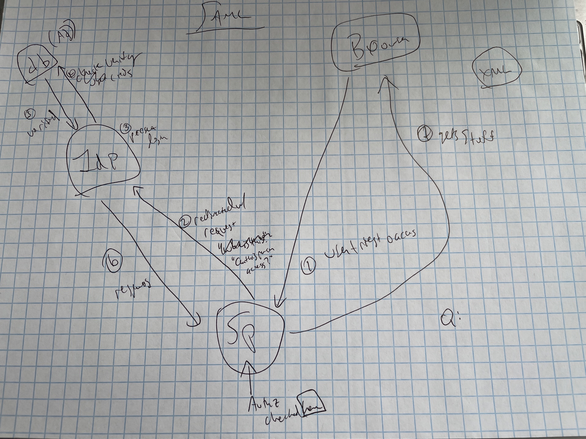
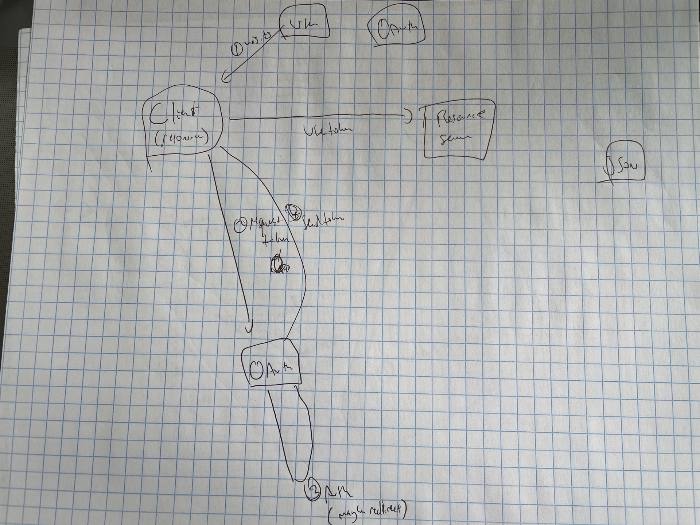

Appendix B — Auth Technical Details
There are a variety of different technologies used to do auth in modern server-based systems. The biggest distinction is between systems that can be used to do SSO and those that cannot. The world is quickly moving towards using exclusively SSO-capable systems.
There are two broad ways you can do auth, which correspond to SSO vs non systems. In a non-SSO system, you go to login to a service and you provide it with your credentials – usually just a username and password. The service takes your username and password and checks it against a database or passes it along to a centralized database. Once your credentials have been verified, the service makes sure you’re allowed to enter and lets you in.
The advantage of this kind of system is that it’s very conceptually simple. Each service knows who’s allowed in and lets you in or doesn’t. The drawback is that it’s obviously not implementing any sort of SSO.
In contrast to this, SSO systems are based on passing tickets or tokens around. The way this works is that you authorize just one time and then are given a ticket or token that lets the system know you’ve been validated. Then, when you go to a particular service, you give your identity token to a centralized controller, it checks that you’re allowed to enter, and it gives you back a token that allows you to enter. It may also provide more details to the system like your username or more specifics on the permissions you’re allowed.
B.1 Username + Password
Many pieces of software come with integrated authentication. When you use those system, the product stores encrypted username and password pairs in a database.
These setups are often really easy from an admin perspective – you just set up individual users on the server. However, the flip side is that users have one more username and password to remember, which is annoying for them. Moreover, if you have more than a few users, or the system is one of more than a few, it’s hard to manage users on a lot of different systems. It can be a real pain to create accounts on a ton of different systems when a new person joins the organization, or to remove their permissions one-by-one when they leave.
For this reason, most IT/Admin organizations strongly prefer using some sort of centralized identity store.
B.2 PAM
Pluggable Authentication Modules (PAM) is a Linux system for doing authentication. As of this writing, PAM is the default authentication method for both RStudio Server and JupyterHub.

Conceptually PAM is pretty straightforward. You install a service on a Linux machine and configure it to use PAM authentication from the underlying host. By default, PAM just authenticates against the users configured on the Linux server, but it can also be configured to use other sorts of “modules” to authenticate against other systems – most commonly LDAP/AD or Kerberos. PAM can also be used to do things when users login – the most common being initializing tokens or tickets to other systems, like a database.
PAM is often paired with System Security Services Daemon (SSSD), which is most commonly used to automatically create Linux users on a server based on the identities stored in an LDAP/AD instance.
Though conceptually simple, reading, writing, and managing PAM modules is kinda painful.
#TODO: Add PAM example
B.3 LDAP/AD
Lightweight Directory Access Protocol (LDAP) is a relatively old, open, protocol used for maintaining a set of entities and their attributes. To be precise, LDAP is actually a protocol for maintaining and accessing entities and their attributes in a tree. It happens that this is a really good structure for maintaining permissions and roles of users at an organization, and it’s the main thing LDAP is used for.
Active Directory (AD) is Microsoft’s implementation of LDAP, and is by-far the most common LDAP “flavor” out there. AD so thoroughly owns the LDAP enterprise market, that LDAP is often referred to as LDAP/AD. There are other implementations you may run across, the most common being OpenLDAP.
Azure, Microsoft’s cloud provider, offers an authentication service called Azure Active Directory (AAD). Confusingly, AAD is usually used in combination with SAML, not LDAP.
It’s worth distinguishing the use of LDAP as an identity store from its use as an authentication technology. As a tree-based database, LDAP is uniquely well-suited to storing the identities, and other attributes of people at the organization. However, as discussed below, using LDAP to authenticate into actual services has security and convenience drawbacks, and many organizations consider it outdated and insecure.
A lot of organizations are moving away from LDAP for authentication in favor of token-based technologies like SAML or OAuth, but many are keeping LDAP as their identity “source of truth” that is referenced by the SAML or OAuth Identity Provider.
LDAP has three main disadvantages relative to other technologies. First, LDAP requires that your credentials (username and password, usually) actually be provided to the service you’re trying to use. This is fundamentally insecure relative to a system where your credentials are provided only to the identity provider, and the service just gets a token verifying who you are. In token-based systems, adding additional requirements like MFA or biometrics are easy, as they’re simply added at the IdP layer. In contrast, doing those things in LDAP would require the service to implement them, which usually is not the case, so you’re usually limited to username and password.
The second disadvantage of LDAP is that it does not allow for central administration of permissions. LDAP directly records only objects and their attributes. Say, for example, you want only users of a particular group to have access to a certain resource. In LDAP, you would have to specify in that resource that it should only allow in users of that group. This is in contrast to SAML/OAuth, where the authorization is centrally managed.
Lastly, LDAP authentication is based on each service authenticating. Once you authenticate, the service might give you a cookie so that your login persists, but there is no general-purpose token that will allow you to login to multiple services.
B.3.1 How LDAP Works
While the technical downsides of LDAP are real, the technical operations of LDAP are pretty straightforward. In short, you try to login to a service, the service collects your username and password, sends it off to the LDAP server, and checks that your username and password are valid.

Note that LDAP is purely for authentication. When you’re using LDAP, authorization has to be handled separately, which is one of the disadvantages.
LDAP is a tree-based entity and value store. This means that LDAP stores things and their attributes, which include a name and one or more values. For example, my entry in a corporate LDAP directory might look like this:
cn: Alex Gold
mail: alex.gold@example.com
mail: alex.gold@example.org
department: solutions
mobile: 555-555-5555
objectClass = PersonMost of these attributes should be pretty straightforward. cn is short for common name, and is part of the way you look up an entity in LDAP (more on that below). Each entity in LDAP must have an objectClass, which determines the type of entity it is. In this case, I am a Person , as opposed to a device, domain, organizationalRole, or room – all of which are standard objectClasses.
Let’s say that your corporate LDAP looks like the tree below:

#TODO: make solutions an OU in final
The most common way to look up LDAP entities is with their distinguished name (DN), which is the path of names from the point you’re starting all the way back to the root of the tree. In the tree above, my DN would be cn=alex,ou=solutions,dc=example,dc=com.
Note that you read the DN from right to left to work your way down the tree. Aside from cn for common name, other common fields include ou for organizational unit, and dc for domain component.
B.3.2 Trying out LDAP
Now that we understand in theory how LDAP works, let’s try out an actual example.
To start, let’s stand up LDAP in a docker container:
#TODO: update ldif
docker network create ldap-net
docker run -p 6389:389 \
--name ldap-service \
--network ldap-net \
--detach alexkgold/authldapsearch is a utility that lets us run queries against the LDAP tree. Let’s try it out against the LDAP container we just stood up.
Let’s say I want to return everything in the subtree under example.org. In that case, I would run ldapsearch -b dc=example,dc=org, where b indicates my search base, which is a dn. But in order to make this actually work, we’ll need to include a few more arguments, including
the host where the LDAP server is, indicated by
-Hthe bind DN we’ll be using, flagged with
-Dthe bind password we’ll be using, indicated by
-w
Since we’re testing, we’re also going to provide the flag -x to use whatever certificate is present on the server. Putting it altogether, along with the commands to reach the docker container, let’s try:
ldapsearch -x -H ldap://localhost:6389 -b dc=example,dc=org -D "cn=admin,dc=example,dc=org" -w admin
# extended LDIF
#
# LDAPv3
# base <dc=example,dc=org> with scope subtree
# filter: (objectclass=*)
# requesting: ALL
#
# example.org
dn: dc=example,dc=org
objectClass: top
objectClass: dcObject
objectClass: organization
o: Example Inc.
dc: example
# admin, example.org
dn: cn=admin,dc=example,dc=org
objectClass: simpleSecurityObject
objectClass: organizationalRole
cn: admin
description: LDAP administrator
userPassword:: e1NTSEF9d3IyVFp6SlAyKy9xT2RsQ0owTDYzR0RzNFo0NUFrQ00=
# search result
search: 2
result: 0 Success
# numResponses: 3
# numEntries: 2You should be able to read what got returned pretty seamlessly. One thing to notice is that the user password is returned, so it can be compared to a password provided. It is encrypted, so it doesn’t appear in plain text.
Note that ldap is a protocol – so it takes the place of the http you’re used to in normal web operations. Like there’s https, there is also a protocol called LDAPS, which is ldap + tls for the same reason you’ve got https. LDAP is (almost) always running in the same private network as the service, so many organizations don’t require using LDAPS, but others do require it.
Running the ldapadmin
docker run -p 6443:443 \
--name ldap-admin \
--env PHPLDAPADMIN_LDAP_HOSTS=ldap-service \
--network ldap-net \
--detach osixia/phpldapadmindn for admin cn=admin,dc=example,dc=org pw: admin
# Replace with valid license
export RSC_LICENSE=XXXX-XXXX-XXXX-XXXX-XXXX-XXXX-XXXX
# Run without persistent data and using default configuration
docker run -it --privileged \
--name rsc \
--volume $PWD/rstudio-connect.gcfg:/etc/rstudio-connect/rstudio-connect.gcfg \
-p 3939:3939 \
-e RSC_LICENSE=$RSC_LICENSE \
--network ldap-net \
rstudio/rstudio-connect:latestB.3.3 Single vs Double Bind
There are two different ways to establish a connection between your server and the LDAP server. The first method is called Single Bind. In a single bind authentication, the user credentials are used both to authenticate to the LDAP server, and to query the server.
In a Double Bind configuration, there is a separate administrative service account, used to authenticate to the LDAP server. Once authentication is complete, then the user is queried in the system.
Single bind configurations are often more limited than double bind ones. For example, in most cases you’ll only be able to see the single user as well as the groups they’re a part of. This can limit application functionality in some cases. On the other hand, there need be no master key maintained on your server, and some admins may prefer it for security reasons.
We can see this really concretely. In the example above, you used a double bind by supplying admin credentials to LDAP. Let’s say instead, you just provide a single user’s credentials. In that case, I don’t get anything back if I just do a general search.
ldapsearch -x -H ldap://localhost:6389 -b dc=example,dc=org -D "cn=joe,dc=engineering,dc=example,dc=org" -w joe
# extended LDIF
#
# LDAPv3
# base <dc=example,dc=org> with scope subtree
# filter: (objectclass=*)
# requesting: ALL
#
# search result
search: 2
result: 32 No such object
# numResponses: 1But just searching for information about Joe does return his own information.
ldapsearch -x -H ldap://localhost:6389 -b cn=joe,dc=engineering,dc=example,dc=org -D "cn=joe,dc=engineering,dc=example,dc=org" -w joe 32 ✘
# extended LDIF
#
# LDAPv3
# base <cn=joe,dc=engineering,dc=example,dc=org> with scope subtree
# filter: (objectclass=*)
# requesting: ALL
#
# joe, engineering.example.org
dn: cn=joe,dc=engineering,dc=example,dc=org
cn: joe
gidNumber: 500
givenName: Joe
homeDirectory: /home/joe
loginShell: /bin/sh
mail: joe@example.org
objectClass: inetOrgPerson
objectClass: posixAccount
objectClass: top
sn: Golly
uid: test\joe
uidNumber: 1000
userPassword:: e01ENX1qL01raWZrdk0wRm1sTDZQM0MxTUlnPT0=
# search result
search: 2
result: 0 Success
# numResponses: 2
# numEntries: 1B.4 Kerberos Tickets
Kerberos is a relatively old ticket-based auth technology. In Kerberos, encrypted tickets are passed around between servers. Because these tickets live entirely on servers under the control of the organization, they are generally quite secure.
Though Kerberos is freely available, it was widely adopted along with Active Directory, and it’s used almost exclusively in places that are running a lot of Microsoft products. A frequent use of Kerberos tickets is to establish database connections.
Because the tickets are passed around from server to server, Kerberos can be used to create a true SSO experience for users.
B.4.1 How Kerberos Works
All of Kerberos works by sending information to and from the central Kerberos Domain Controller (KDC). In Kerberos, authentication and authorization are handled independently.
When a Kerberos session is initialized, the service sends the users credentials off to the KDC and requests something called the Ticket Granting Ticket (TGT) from the KDC. TGTs have a set expiration period. When they expire, the client has to request an updated TGT. This is one reason why Kerberos is considered quite secure - even if someone managed to steal a TGT, they’d only be able to use it for a little while before it went stale and could be revoked.
When the user wants to actually do something, they send the TGT back to the KDC again and get a session key (sometimes referred to as a service ticket) that allows access to the service, usually with a specified expiration period.

B.4.2 Try out Kerberos
#TODO
B.5 SAML
These days Security Assertion Markup Language (SAML) is probably the most common system that provides true SSO – including single login and centrally-managed permissions. SAML does this by passing around XML tokens.
The way this generally works is that a user attempts to login to a Service Provider (SP). The SP redirects the user to an Identity Provider (IdP), which checks either for a preexisting token in the users browser, or verifies the users credentials. The IdP checks for the user’s authorization to access the SP in question, and sends an authorization token back to the SP.

Relative to LDAP/AD, which is from the early 1990s, SAML is a new kid on the block. SAML 1.0 was introduced in 2002, and SAML 2.0, which is the current standard, came out in 2005. Many large enterprises are switching their systems over to use SAML or have already done so.
One superpower of SAML IdPs is that many of them can federate identity management to other systems. So, it’s pretty common for large enterprises to maintain their user base in one or more LDAP/AD system, but actually use a SAML IdP to do authentication and authorization. In fact, this is what Azure Active Directory (AAD), which is Microsoft Azure’s hosted authentication offering does. It is possible to use LDAP/AD with AAD, but most organizations use it with SAML.
One of the nice things about SAML is that credentials are never shared directly with the SP. This is one of the ways in which SAML is fundamentally more secure than LDAP/AD – the users credentials are only ever shared with the IdP.
There are two different ways logins can occur – starting from the SP, or starting from the IdP.
In SAML, the XML tokens that are passed back and forth are called assertions.
B.5.1 Try SAML
We’re going to use a simple SAML IdP to try out SAML a bit. This container only supports a single SP. Any IdP that might be used in an enterprise environment is going to support many SPs simultaneously.
Let’s go through the environment variables we’re providing to this docker run command. We’re providing three different arguments:
The
SP_ENTITY_IDis the URL of theSP_ASSERTION_CONSUMER_SERVICEis the URL of the SP that is prepared to receive the authorized responses coming back from the SAML IdP.SP_SINGLE_LOGOUT_SERVICEis the URL where the SP will receive a logout command once someone has been logged out at the IdP level. Many SPs do not implement single logout.
docker run --name=saml_idp \
-p 8080:8080 \
-p 8443:8443 \
-e SIMPLESAMLPHP_SP_ENTITY_ID=http://app.example.com \
-e SIMPLESAMLPHP_SP_ASSERTION_CONSUMER_SERVICE=http://localhost/simplesaml/module.php/saml/sp/saml2-acs.php/test-sp \
-e SIMPLESAMLPHP_SP_SINGLE_LOGOUT_SERVICE=http://localhost/simplesaml/module.php/saml/sp/saml2-logout.php/test-sp \
-d kristophjunge/test-saml-idp:1.15http://localhost:8080/simplesaml
admin/secret
B.6 OIDC/OAuth2.0
OIDC/OAuth is slightly newer than SAML, created in 2007 by engineers at Google and Twitter. OAuth 2.0 – the current standard was released in 2012. If you’re being pedantic, OAuth is a authorization protocol, and OpenID Connect (OIDC) is an authorization protocol that uses OAuth. In most cases, people will just call it OAuth.

#TODO: this picture is bad
In an enterprise context, OAuth/OIDC is conceptually very similar to SAML – but instead of passing around XML tokens, it’s based on JSON Web Tokens (JWT, usually pronounced “jot”).
#TODO: try it out
B.6.1 OAuth/OIDC vs SAML
From a practical perspective, the biggest difference between OAuth/OIDC and SAML is that SAML is quite strict about what SPs are allowed. Each SP needs to be registered at a specific web address that the IdP knows it’s allowed to receive requests from.
In contrast, OAuth/OIDC was designed to be used to delegate authentication and authorization to different kinds of services that might be widely available on the internet. If you’ve ever allowed a website to Login with Apple/Google/Facebook/Github, that has been an application of OAuth/OIDC.
Because the set of allowable SPs is fixed under SAML, it’s more common in enterprise settings. Some admins consider SAML more secure for that reason as well.
In some situations, SAML is used for authentication and OAuth is used for access to other services. Most commonly in the data science world, this can come up when a user logs into a service like RStudio Server and is then authorized to a database using an OAuth JWT.
Resources: https://www.okta.com/identity-101/saml-vs-oauth/ https://www.okta.com/identity-101/whats-the-difference-between-oauth-openid-connect-and-saml/ https://phoenixnap.com/blog/kerberos-authentication https://www.dnsstuff.com/rbac-vs-abac-access-control